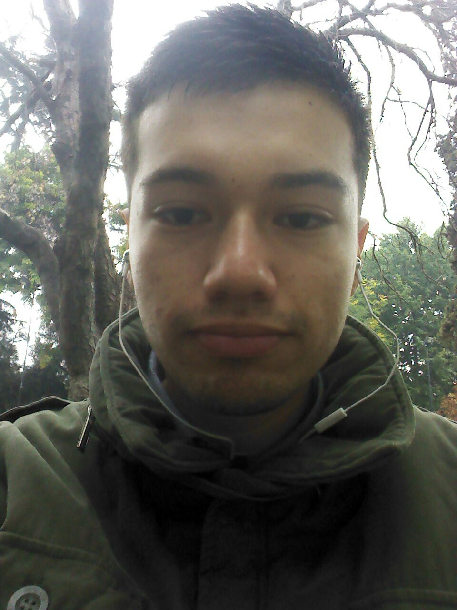

Enrique Andrés Cáceres OsorioDATOS PERSONALESCEDULA: 19.036.132-2 FECHA NACIMIENTO: 24 de Mayo de 1995 NACIONALIDAD: Chilena ESTADO CIVIL: Soltero ESTUDIOS REALIZADOS 2013 - 2015 UNIVERSIDAD ANDRES BELLO Ingeniería en Computación e Informática (3° Año) CENTRO EDUCACIONAL SAN MATEO Enseñanza Media 1º a 4º 2003 – 2010 CENTRO EDUCACIONAL SAN MATEO Enseñanza Básica 1º a 8º ESPERIENCIA LABORAL 2014 – 2015 JUAN MAESTRO Maestro de cocina y Operario MAXI-K Vendedor Cajero 2013 DROGUERÍA ÑUÑOA LTDA. Reponedor COMPETENCIAS Y METAS LABORALES Me considero una persona con altos niveles de motivación, con capacidad de trabajar en equipo, proactivo, planificado, y creativo en el trabajo cotidiano, sobre todo cuando se me fijan objetivos altos. Desarrollarme en las Áreas de Tecnología de Información en una Empresa sólida que me permita el crecimiento profesional, con la finalidad de incrementar mis habilidades y conocimientos, y de esta forma poder ser un apoyo importante en la Organización. |